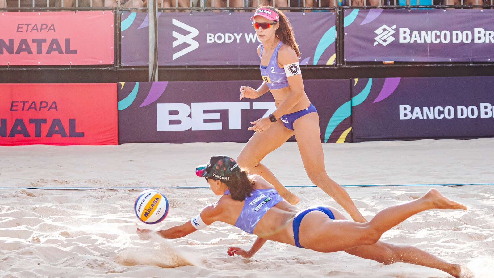
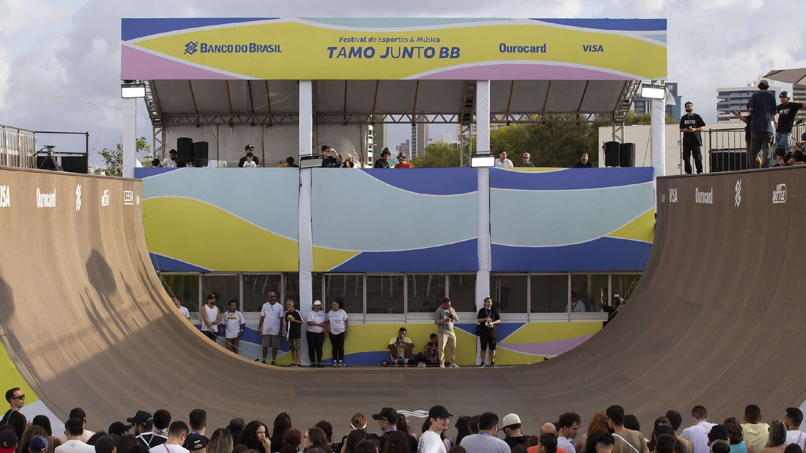
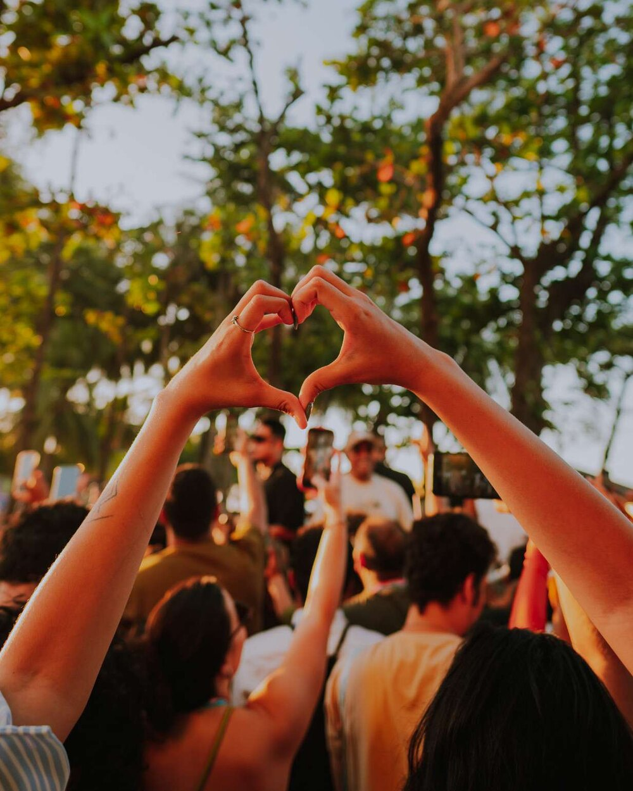
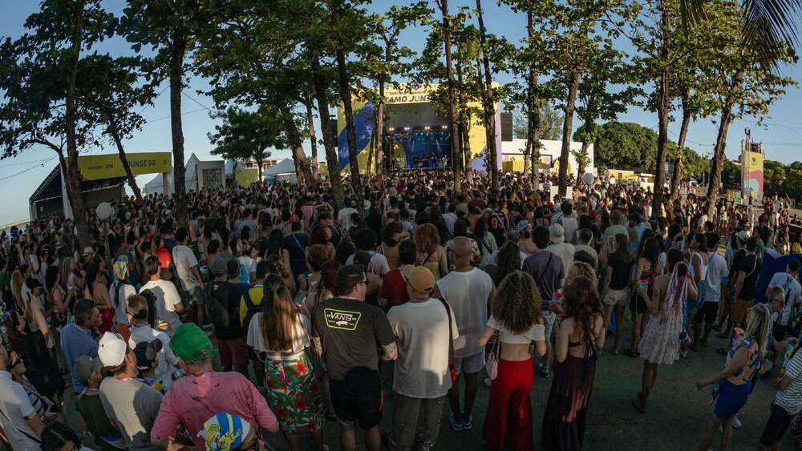
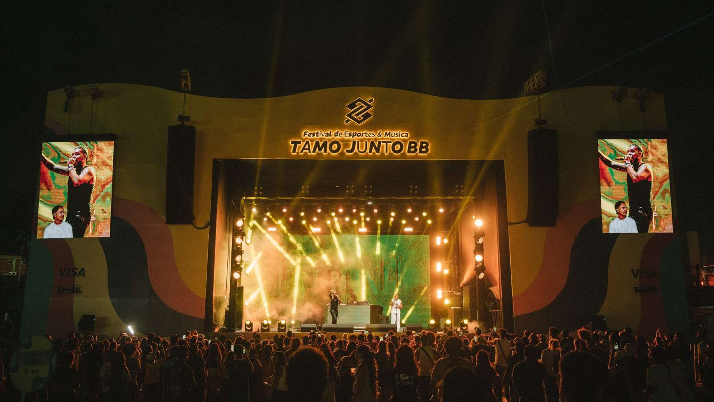
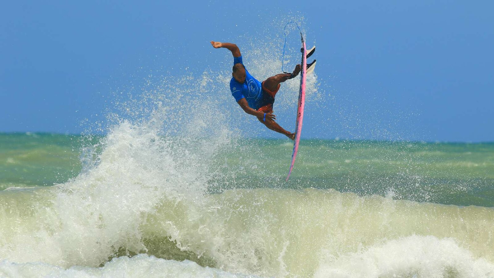

Tamo Junto BB.
Uma experiência que conecta modalidades esportivas, música, cultura e marcas.
UM PROJETO.
MUITAS HISTÓRIAS.
O Tamo Junto BB reúne modalidades esportivas, música, games e ativações de marca no mesmo ambiente, com entrada e programação que variam por atividade. Cada edição exige coordenar arenas, atrações, atletas, fornecedores e público em poucos dias.






Divulgação Festival Tamo Junto BB · 6 imagens
OS EVENTOS DENTRO
Do festival.
O Tamo Junto BB não é um evento, são vários ao mesmo tempo. Cada frente tem entidade, calendário e público próprios, e todas acontecem na mesma praça, nos mesmos dias. É o que explica o público circulante alto e a permanência longa.
Campeonato Brasileiro de Skate Vertical
A final do Vert Battle acontece dentro do festival, homologada pela CBSk e transmitida ao vivo pela Globo e pelo SporTV. Em Natal, em 2024, foi a etapa de encerramento da temporada; em Fortaleza, em 2025, a final, em 13 e 14 de dezembro.
Vôlei de praia
Arena de areia montada na praça do festival, com as melhores duplas brasileiras. Em Natal a disputa entrou no circuito com o nome da cidade na identidade da etapa.
Surfe
Etapa do Circuito BB de Surfe, a única modalidade que sai da praça principal e vai para o mar. Fortaleza recebeu o encerramento do circuito em 2025; em Maceió, em 2026, acontece na Praia Pontal da Barra, a cerca de dez minutos do Jaraguá.
Corrida de rua
Etapa do Circuito Banco do Brasil de Corrida, que leva milhares de praticantes às ruas da cidade-sede e abre o festival para um público que não vem pelo palco.
Arena Gamer e e-Sports
O território de tecnologia se organiza em torno da Arena Gamer, com consoles, realidade virtual, jogos de tabuleiro e competição. Em Natal, em 2024, a programação incluiu uma área de e-Sports.
Palco musical e palco local
Mais de 20 shows nas duas primeiras edições, para um público total informado de 150 mil pessoas, com um palco dedicado às atrações da cena da cidade-sede.
Território de sustentabilidade
Neutralização das emissões de carbono, gestão e reaproveitamento de resíduos, doação de alimentos e de equipamento esportivo e visitas guiadas para crianças de projetos sociais.
As quatro frentes da marca no festival são esporte, música, tecnologia e sustentabilidade. A programação varia de edição para edição: o que está descrito aqui reúne o que aparece em Natal 2024, Fortaleza 2025 e no previsto para Maceió 2026, conforme a apresentação oficial do festival.
ANTES
DISSO.
Tamo Junto Nesse Game, Salvador, 2023
Antes do festival assumir o nome atual, o Banco do Brasil realizou em Salvador, de 23 a 27 de agosto de 2023, o Tamo Junto Nesse Game, no Centro de Convenções. O formato já era o mesmo: vôlei de praia, surfe, skate, corrida de rua, e-Sports e shows, com entrada gratuita. O surfe foi a única modalidade fora do centro de convenções, na Praia de Stella Maris, com a terceira etapa do Circuito BB de Surfe. A arena gamer recebeu a final da Peneira W7M, que selecionou jogadores para as equipes de Counter-Strike e EA Sports FC. A organização projetou cerca de 40 mil pessoas no total.
Esta edição não é contada pela marca entre as edições do Tamo Junto BB, que chega à terceira em 2026. Entra aqui como antecedente do formato, com a sua própria fonte.
TODAS AS
EDIÇÕES NO ACERVO.
2026Tamo Junto BB 2026
28 de outubro a 1 de novembro de 2026 · Estacionamento do Jaraguá e Jaraguá Hall, Maceió, AL · 5 dias
Explorar edição
2025Tamo Junto BB 2025
10 a 14 de dezembro de 2025 · Fortaleza, CE · 5 dias
Explorar edição
2024Tamo Junto BB 2024
30 de outubro a 3 de novembro de 2024 · Arena das Dunas, Natal, RN · 5 dias
Explorar edição
Registros por edição
Quantidade de fatos com fonte identificada em cada ano catalogado.
PORTE DA
OPERAÇÃO.
O que este projeto mobiliza para acontecer. Os campos preenchidos têm origem identificada; os demais dependem de dado da produção.
operacao.perfil.tamo-junto-bb · staffoperacao.perfil.tamo-junto-bb · fornecedoresoperacao.perfil.tamo-junto-bb · dias_montagemO QUE O FESTIVAL MOVIMENTA.
Balanço das duas primeiras edições, conforme a apresentação oficial do festival.
Números declarados pela produção na apresentação oficial do festival, sem auditoria independente anexada a esta página. Descrevem o festival, que é propriedade do Banco do Brasil, e não resultado da Cadillac.
QUEM ESTÁ
NESTE PROJETO.
Marcas e instituições identificadas no material oficial do projeto. Presença aqui indica relação registrada no projeto, não contrato com a Cadillac. Logotipos só vão ao ar com autorização de uso.
O QUE PERGUNTAM
SOBRE O PROJETO.
O que acontece no festival?
Esporte, música, games e ativações de marca no mesmo ambiente. Em Fortaleza, a programação reuniu skate, surfe, vôlei de praia, corrida e games, com shows de artistas nacionais.
O festival é gratuito?
Gratuidade e acesso variaram por atividade. A programação oficial de cada edição é a referência.
Qual foi a participação da Cadillac?
Há menção pública de profissional de produção associando a Cadillac à edição de Fortaleza. O escopo contratual depende de documentação.